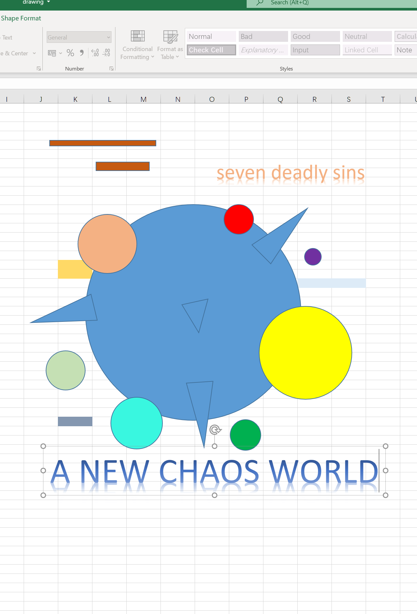
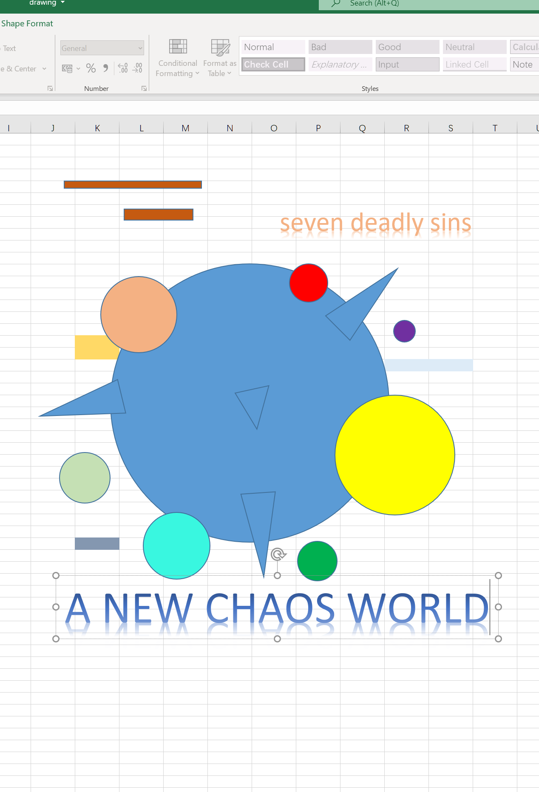

“We used to look up at the sky and wonder at our place in the stars, now we just look down and worry about our place in the dirt.”
— Cooper, 'Interstellar', 2014.
"Do not go gentle into that good night; Old age should burn and rave at close of day. Rage, rage against the dying of the light."
- Professor Brand, 'Interstellar', 2014.

In the further future, perhaps our generation has perished, but new human beings have emerged, they can resist strong ultraviolet rays and can survive in places where oxygen is scarce, they are exiled with a new world. A new world has been created. In this world, there is the main planet, that is, the earth of the previous generation, and then seven new planets appear. These seven planets surround the main planet, and these seven planets correspond to human beings of the seven deadly sins, which are pride, envy, wrath, sloth, greed, gluttony, and lust. This new generation of human beings will also be exiled to seven different asteroids for these different original sins to atone for their sins.

 

1.
The first plan comes from the idea of the future. My idea is relatively inclined to the concept of the end of the world because I like horror movies, games and even paintings. I always get my inspiration from these absurd ideas.
In this direction, the 3D modelling software Maya is used. Later, I will use it in comparison with the modelling software C4d, and then select a modelling software suitable for me to complete the subsequent creation.
The first plan can see that the earth in the future has undergone a mutation, and many spikes have grown. Maybe this is the earth that has been devastated by the virus. You can also see a very huge unknown planet in the upper right corner. There are seven asteroids around the mutated earth, which correspond to the seven deadly sins, pride, envy, wrath, sloth, greed, gluttony, lust, people with different sins will be exiled to different planets, in other words, human beings are actually a virus on the earth because the destruction of human beings has made the earth dilapidated.
If I choose this plan, I will make the seven deadly sins seven asteroids into different shapes, and let them suggest the meaning of the seven deadly sins.
2.
The second direction is to do my poster design on the Miro platform, which can be defined as a collage style. I can find various suitable materials, then modify the size of the picture, remove the background of the picture, and finally complete the collage.
Below is a small experiment I made, you can see that the earth is in ruins, surrounded by viruses, and there are even traces of the explosion.
I added a stitch to the yellow earth to express the helplessness of people repairing the earth, and because of human disrespect for the earth, the planet cannot return to its original state.
The wound on the earth is a picture with a white background. I can use the function of removing the white background in the PowerPoint to make this picture only leave the required elements, but I am thinking about how to remove the picture with a complex background.
3.
The theme of the third direction is the same as that of the first direction, and it is also expressing the concept of the end world. The software is office excel. I am trying to use simple graphics and different colours to express the concept of the seven deadly sins.
Excel can insert a lot of materials. If I choose this direction, I will consider integrating the collage-style into the creation of this direction.
I currently choose cinema 4d as my poster creation software. I am exploring many functions. At present, I have a general understanding of the material of this software, as well as the functions of lighting. Many functions are still unfamiliar, so it seems that the effect will be relatively rough. I watched some tutorials and tried to divide the largest planet, the Earth, into two parts. The Boolean function of this software is used here. The purpose is to use two different objects for cutting to obtain new objects. In addition, I gave the earth some charred-like texture, showing a feeling of desolation and dilapidation. For the other seven planets of the original sin, I currently give simple materials. In future creation, I should make these seven asteroids into different shapes, not just to express with the sphere.Around these planets I placed some broken stones, I wanted to express a feeling of fragmentation, after all, the earth has broken into seven new small planets. In addition, I chose a dark starry sky for the background. Just like the suggestion given by my peers, the black background gives a sense of heaviness and matches the style of the whole theme. Finally, I am also exploring the lighting function of this software. I have not yet mastered it very well, so the lighting makes the background look a bit awkward. I will continue to try it in the further steps.
1. I like the lighting of the second and third images—I think having less stark light gives the background more depth, like show the vastness of space. I feel like there's something missing with the intent in terms of the 7 deadly sins, but maybe that might change once you start exploring the shapes of the other planets. -From my peers
2. I think your fifth composition is really interesting, I like the black background but in this one the way the light is casting the planet in dark is very cool and I think makes it more dramatic. I can see your intent but I couldn't really tell it was the Earth, if that's a part that is important to you then maybe leaving a bit of green/blue would help. I think the starry background is a good choice, though maybe something with less stars would make it seem even more isolated! -Olivia P
3. up-close and personal, which allows for a deeper connection with the piece
- Try to create more irregular cracks into the planet to further express the idea of desolation/dilapidation (right now it feels a little too smooth)
- Something to try: use colour to represent the seven sins (don't necessarily have to use shapes) -Samantha
4. I think your fourth and fifth compositions are the strongest in expressing your ideas of fragmentation. The use of black does go well with your theme but I personally feel was done better in the fifth composition with the use of the white light for contrast... because the use of black in the fourth composition is a bit too heavy and the bottom half of the earth gets lost a bit so i would suggest more accents of the white glowing light or the bluish-green stars under the bottom half of the earth to make sure the shape isn't lost. -From my peers
5. I think the posters are very strong on their own as standalone visual images, but have you considered using any type or writing to compliment it? there's a good amount of negative space that can potentially be played with otherwise but I think these are strong compositions! -From my peers
This is the third revised version. In this poster, I added new elements, such as a candy-type planet on the left, which is like hard candy, but it also has a lot of bumps on its body. , I want to express a concept of mutation, and at the same time, this planet represents the sin of gluttony. On the right side of the poster, I added the concept of a space station, and I was considering if it could be defined as the sin of wrath because this space station has a red core that seems to produce nuclear fusion, expressing a mood of anger. I began to try to use metal characters for text typesetting. Although it can express the three-dimensional effect, the typesetting in three-dimensional software is relatively complicated. Because the effects of different angles need to be considered, it is necessary to constantly debug.
In the final revision, I listened to my peers, and since they told me my Seven Deadly Sins elements were not very obvious, I added a lot of revision details:
1. For the planet gluttony, I added donuts, which represent food.
2. For the planet greedy (at the bottom right) I added a lot of golden substances and crystals, representing treasure.
3. For the planet Pride, I use the rainbow colors of sexual minorities.
4. For the planet wrath, I use magma and cracks to represent wrath.
5. For the planet lust, I used the female body to represent it.
6. For the planet envy, I use the eyes to represent it, because jealousy is an emotion that comes from the senses first.
7. For the planet sloth, I used a lot of soft blue drops to represent it.